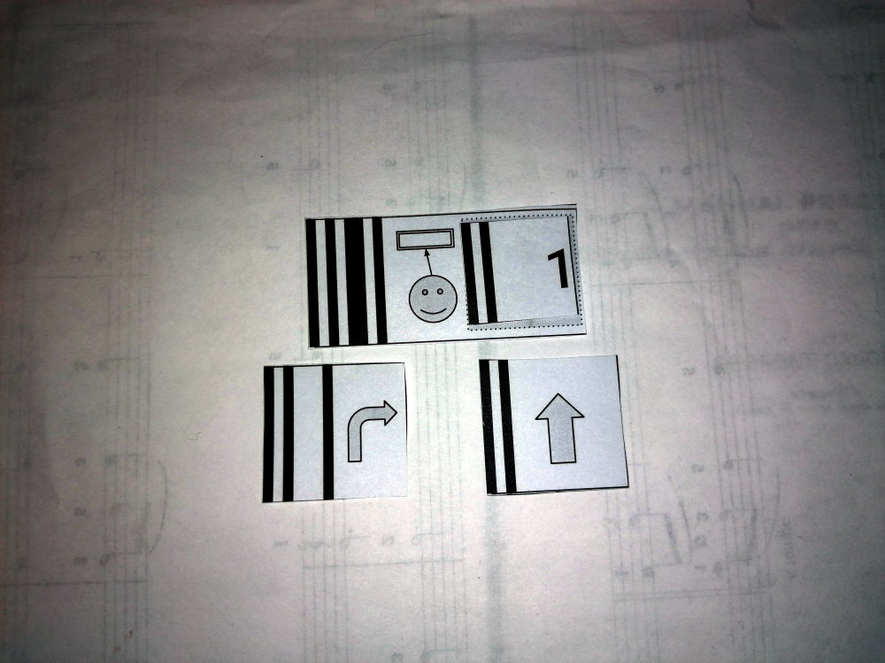
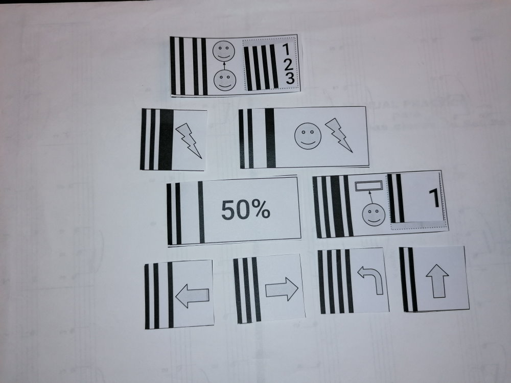
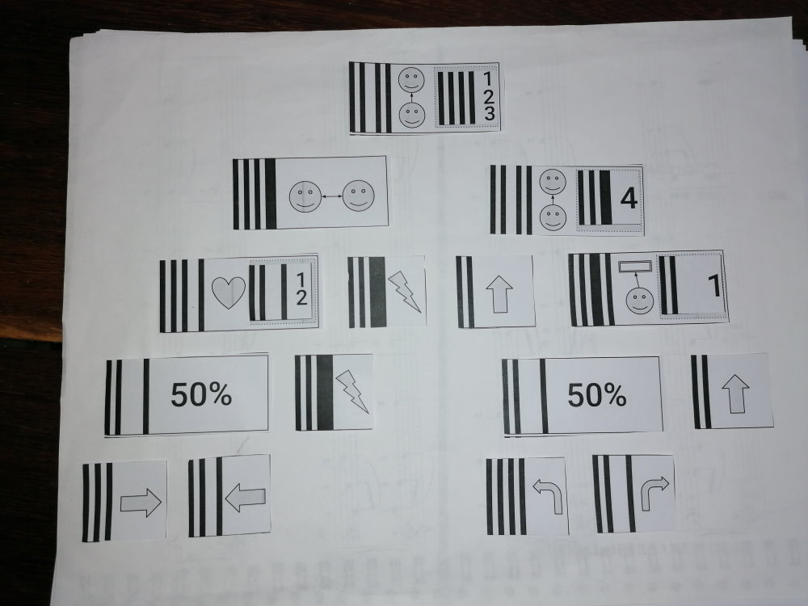
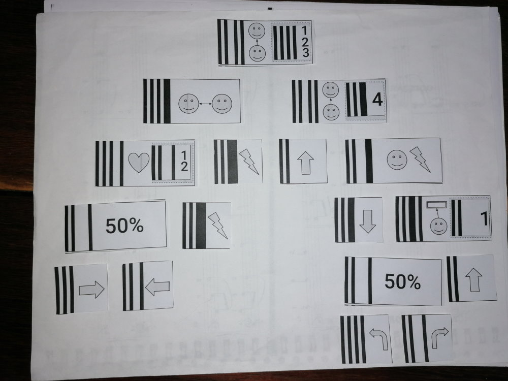

Das Ziel des Spiels ist es mithilfe von Karten einen Roboter zu programmieren und ihn gegen einen anderen Roboter
in der Arena antreten zu lassen.
Der Roboter hat verschiedene Sensoren und muss sich entscheiden welche Aktion er in jeder Runde ausführen will.
Jede Karte symbolisiert eine Bedingung mit zwei Möglichkeiten (tritt ein oder tritt nicht ein) oder eine Aktion. Die Bedingungen können in einer Baumstruktur beliebig verknüpft werden, am Schluss
muss aber immer eine Aktion definiert sein. (z.B. Wenn meine Distanz bis zur Wand 1 oder 2 ist,
dann drehe links sonst gehe geradeaus).
Sensoren
Was ist meine Distanz bis zur Wand?
Was ist meine Distanz zum nächsten sichtbaren Gegner?
Bin ich für den sichtbare Gegner auch sichtbar
Wie viele Lebenspunkt habe ich (jeder Roboter beginnt mit 5)
Das Spielfeld besteht aus 5x5 Feldern. Zu Beginn jedes Spiels werden die Roboter zufällig platziert und
ausgerichtet.
Jeder Roboter berechnet jede Runde die Aktion er durchführen will und diese werden gleichzeitig durchgeführt.
Alle Sensorwerte werden ausgewertet bevor eine Aktion durchgeführt wurde. Die Aktion "Angriff" wird zuletzt
ausgeführt, es ist also möglich mit einer geschickten Bewegung einem Angriff auszuweichen.
Wenn ein Roboter 0 Lebenspunkte erreicht verliert er das Spiel.
Wenn sich ein Roboter auf das Spielfeld eines anderen Roboters bewegt verliert er 1 Lebenspunkt
Wenn ein Roboter sich über den Rand des Spielfelds bewegt verliert er 1 Lebenspunkt
Beispiele

Wenn die Distanz zur Wand 1 beträgt, drehe rechts sonst gehe gerade aus.

Wenn die Distanz zum Gegner 1,2,3 beträgt greife an sonst wenn in Schussweite gehe zufällig rechts oder links, sonst wenn 1 vor der Wand drehe sonst gehe gerade aus.

Fortgeschrittenes Beispiel

Beispiel das alle verschiedenen Karten verwendet
Roboter hochladen
Um die Simulation zu starten müsst Ihr je ein Foto von den Karten hochladen und START drücken. Falls die Foto nicht gelesen werden kann, versucht es erneut mit einer besseren Foto.